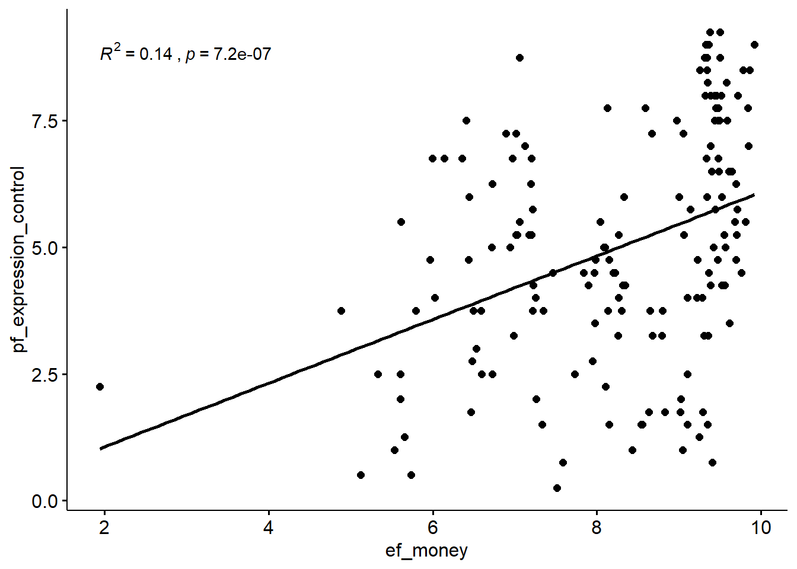

main
BastianEichmueller
2021-02-25
Last updated: 2021-03-01
Checks: 7 0
Knit directory: Assignment/
This reproducible R Markdown analysis was created with workflowr (version 1.6.2). The Checks tab describes the reproducibility checks that were applied when the results were created. The Past versions tab lists the development history.
Great! Since the R Markdown file has been committed to the Git repository, you know the exact version of the code that produced these results.
Great job! The global environment was empty. Objects defined in the global environment can affect the analysis in your R Markdown file in unknown ways. For reproduciblity it's best to always run the code in an empty environment.
The command set.seed(20210225) was run prior to running the code in the R Markdown file. Setting a seed ensures that any results that rely on randomness, e.g. subsampling or permutations, are reproducible.
Great job! Recording the operating system, R version, and package versions is critical for reproducibility.
Nice! There were no cached chunks for this analysis, so you can be confident that you successfully produced the results during this run.
Great job! Using relative paths to the files within your workflowr project makes it easier to run your code on other machines.
Great! You are using Git for version control. Tracking code development and connecting the code version to the results is critical for reproducibility.
The results in this page were generated with repository version 654789b. See the Past versions tab to see a history of the changes made to the R Markdown and HTML files.
Note that you need to be careful to ensure that all relevant files for the analysis have been committed to Git prior to generating the results (you can use wflow_publish or wflow_git_commit). workflowr only checks the R Markdown file, but you know if there are other scripts or data files that it depends on. Below is the status of the Git repository when the results were generated:
Ignored files:
Ignored: .Rproj.user/
Note that any generated files, e.g. HTML, png, CSS, etc., are not included in this status report because it is ok for generated content to have uncommitted changes.
These are the previous versions of the repository in which changes were made to the R Markdown (analysis/main.Rmd) and HTML (docs/main.html) files. If you've configured a remote Git repository (see ?wflow_git_remote), click on the hyperlinks in the table below to view the files as they were in that past version.
| File | Version | Author | Date | Message |
|---|---|---|---|---|
| Rmd | 654789b | BastianEichmueller | 2021-03-01 | wflow_publish(files = "analysis/main.Rmd") |
| html | 76beb41 | BastianEichmueller | 2021-03-01 | Build site. |
| Rmd | df4b590 | BastianEichmueller | 2021-03-01 | wflow_publish(files = "analysis/main.Rmd") |
| html | f4096ef | BastianEichmueller | 2021-02-28 | Build site. |
| html | 1ddef8e | BastianEichmueller | 2021-02-26 | Build site. |
| Rmd | e30ee98 | BastianEichmueller | 2021-02-26 | wflow_publish(files = "analysis/main.Rmd") |
| html | c36f6c6 | BastianEichmueller | 2021-02-25 | Build site. |
| Rmd | 78ea23b | BastianEichmueller | 2021-02-25 | wflow_publish(files = "analysis/main.Rmd") |
| html | ddac8a4 | BastianEichmueller | 2021-02-25 | Build site. |
| html | 9480102 | BastianEichmueller | 2021-02-25 | Build site. |
| html | 03cc71d | BastianEichmueller | 2021-02-25 | Build site. |
| Rmd | 0dd959a | BastianEichmueller | 2021-02-25 | wflow_publish(files = "analysis/main.Rmd") |
Assignment
- Use the hfi dataset from the
openintropackage - Fit a new model that uses
pf_expression_controlto predicthf_score, or the total human freedom score. Again add region to the model from Q4. Compare the slope and \(R^2\) with the model from Q4.
Finally fit a model with
ef_moneyandpf_expression_controlas exposures andhf_scoreas outcome. Compare the slope and \(R^2\) from the models from Q1. Couldef_moneybe a confounder?Use a linear regression model (and scatter plot) with
ef_moneyas exposure andpf_expression_controlas outcome, to study whetheref_moneyhas an association withpf_expression_controlas well. This might validate our finding thatef_moneyis a confounder betweenpf_expression_controlas exposure andhf_scoreas outcome from Q6.
Solutions
library(openintro)
library(tidyverse)
hfi_2016 <- hfi %>%
filter(year == 2016)m1 <- lm(hf_score ~ pf_expression_control, data = hfi)
m2 <- lm(hf_score ~ pf_expression_control + region, data = hfi)
slope1 <- m1$coefficients["pf_expression_control"]
slope2 <- m2$coefficients["pf_expression_control"]
r1 <- summary(m1)$r.squared
r2 <- summary(m2)$r.squared
knitr::kable(
data.frame(
"slope_pf_expression_control" = c(slope1, slope2),
"r_squared" = c(r1, r2),
row.names = c("m1", "m2")
)
)| slope_pf_expression_control | r_squared | |
|---|---|---|
| m1 | 0.3498617 | 0.5775046 |
| m2 | 0.2423651 | 0.7375400 |
- The slopes are \(m_1 \approx 0.35\) and \(m_2 \approx 0.24\).
The \(R^2\) values are \(R^2_1 \approx 0.58\) and \(R^2_1 \approx 0.74\).
m3 <- lm(hf_score ~ ef_money, data = hfi)
m4 <- lm(hf_score ~ pf_expression_control + ef_money, data = hfi)
slope3 <- m3$coefficients["ef_money"]
slope4 <- m4$coefficients["ef_money"]
r3 <- summary(m3)$r.squared
r4 <- summary(m4)$r.squared
knitr::kable(
data.frame(
"slope_ef_money" = c(slope3, slope4),
"r_squared" = c(r3, r4),
row.names = c("m3", "m4")
)
)| slope_ef_money | r_squared | |
|---|---|---|
| m3 | 0.5327067 | 0.5130908 |
| m4 | 0.3520102 | 0.7555412 |
We can see that when adding pf_expression_control as an additional exposure to the model hf_score ~ ef_money, the slope for ef_money decreases from 0.53 to 0.35, and the \(R^2\) value only increases from 0.51 to 0.76. This suggests that ef_money may be a confounder regarding the outcome hf_score with the additional exposure of pf_expression_control as the slope decreases and the \(R^2\) values indicate that the variance explained by the model does not increase as much as expected when combining the variables.
library(ggpubr)
m5 <- lm(pf_expression_control ~ ef_money, data = hfi)
summary(m5)
Call:
lm(formula = pf_expression_control ~ ef_money, data = hfi)
Residuals:
Min 1Q Median 3Q Max
-5.4307 -1.4383 0.0757 1.5433 5.0585
Coefficients:
Estimate Std. Error t value Pr(>|t|)
(Intercept) -0.54735 0.32227 -1.698 0.0897 .
ef_money 0.71542 0.03911 18.291 <2e-16 ***
---
Signif. codes: 0 '***' 0.001 '**' 0.01 '*' 0.05 '.' 0.1 ' ' 1
Residual standard error: 1.995 on 1374 degrees of freedom
(82 observations deleted due to missingness)
Multiple R-squared: 0.1958, Adjusted R-squared: 0.1952
F-statistic: 334.6 on 1 and 1374 DF, p-value: < 2.2e-16ggscatter(hfi, x = "ef_money", y = "pf_expression_control", add = "reg.line") +
stat_cor(aes(label = paste(..rr.label.., ..p.label.., sep = "~`,`~")))`geom_smooth()` using formula 'y ~ x'
This validates that ef_money is a confounder between pf_expression_control as exposure and hf_score as outcome.

sessionInfo()R version 3.6.0 (2019-04-26)
Platform: x86_64-w64-mingw32/x64 (64-bit)
Running under: Windows 10 x64 (build 18363)
Matrix products: default
locale:
[1] LC_COLLATE=English_Europe.1252 LC_CTYPE=English_Europe.1252
[3] LC_MONETARY=English_Europe.1252 LC_NUMERIC=C
[5] LC_TIME=English_Europe.1252
attached base packages:
[1] stats graphics grDevices utils datasets methods base
other attached packages:
[1] ggpubr_0.4.0 forcats_0.5.0 stringr_1.4.0
[4] dplyr_1.0.0 purrr_0.3.4 readr_1.3.1
[7] tidyr_1.1.0 tibble_3.0.3 ggplot2_3.3.2
[10] tidyverse_1.3.0 openintro_2.0.0 usdata_0.1.0
[13] cherryblossom_0.1.0 airports_0.1.0 workflowr_1.6.2
loaded via a namespace (and not attached):
[1] httr_1.4.1 splines_3.6.0 jsonlite_1.7.0 carData_3.0-4
[5] modelr_0.1.8 assertthat_0.2.1 highr_0.8 blob_1.2.1
[9] cellranger_1.1.0 yaml_2.2.1 lattice_0.20-38 pillar_1.4.6
[13] backports_1.1.7 glue_1.4.1 digest_0.6.25 promises_1.1.1
[17] ggsignif_0.6.0 rvest_0.3.5 colorspace_1.4-1 Matrix_1.2-17
[21] htmltools_0.5.0 httpuv_1.5.4 pkgconfig_2.0.3 broom_0.7.0
[25] haven_2.3.1 scales_1.1.1 whisker_0.4 openxlsx_4.1.5
[29] later_1.1.0.1 rio_0.5.16 git2r_0.28.0 mgcv_1.8-28
[33] farver_2.0.3 generics_0.0.2 car_3.0-9 ellipsis_0.3.1
[37] withr_2.2.0 cli_2.0.2 magrittr_1.5 crayon_1.3.4
[41] readxl_1.3.1 evaluate_0.14 fs_1.4.2 fansi_0.4.1
[45] nlme_3.1-139 rstatix_0.6.0 xml2_1.3.2 foreign_0.8-71
[49] tools_3.6.0 data.table_1.13.0 hms_0.5.3 lifecycle_0.2.0
[53] munsell_0.5.0 reprex_0.3.0 zip_2.0.4 compiler_3.6.0
[57] rlang_0.4.7 grid_3.6.0 rstudioapi_0.11 labeling_0.3
[61] rmarkdown_2.3 gtable_0.3.0 abind_1.4-5 DBI_1.1.0
[65] curl_4.3 R6_2.4.1 lubridate_1.7.9 knitr_1.29
[69] rprojroot_1.3-2 stringi_1.4.6 Rcpp_1.0.5 vctrs_0.3.2
[73] dbplyr_1.4.4 tidyselect_1.1.0 xfun_0.15